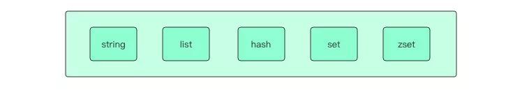
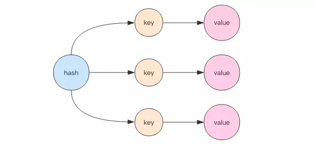
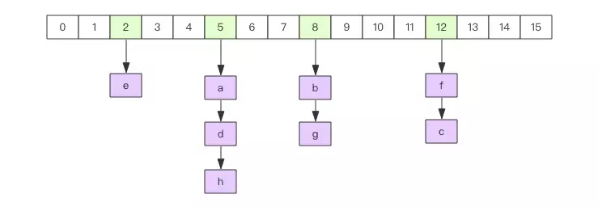
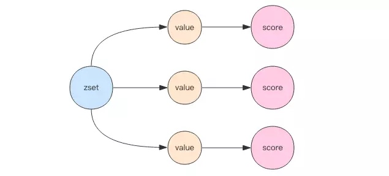
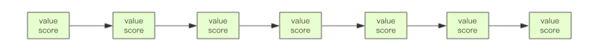
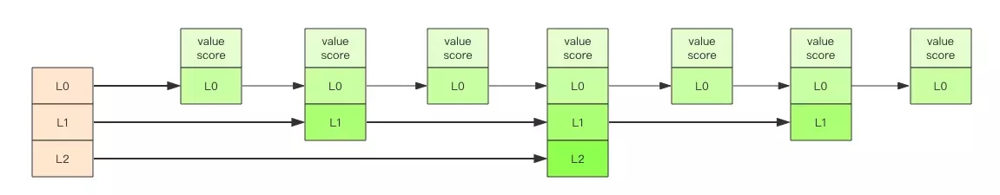

https://juejin.im/post/5b53ee7e5188251aaa2d2e16

Redis 有 5 个基本数据结构，string、list、hash、set 和 zset。它们是日常开发中使用频率非常高应用最为广泛的数据结构，把这 5 个数据结构都吃透了，你就掌握了 Redis 应用知识的一半了。
string
首先我们从 string 谈起。string 表示的是一个可变的字节数组，我们初始化字符串的内容、可以拿到字符串的长度，可以获取 string 的字串，可以覆盖 string 的字串内容，可以追加子串。
初始化字符串 需要提供「变量名称」和「变量的内容」
> set ireader beijing.zhangyue.keji.gufen.youxian.gongsi
OK
复制代码
获取字符串的内容 提供「变量名称」
> get ireader
"beijing.zhangyue.keji.gufen.youxian.gongsi"
复制代码
获取字符串的长度 提供「变量名称」
> strlen ireader
(integer) 42
复制代码
获取子串 提供「变量名称」以及开始和结束位置 [start, end]
> getrange ireader 28 34
"youxian"
复制代码
覆盖子串 提供「变量名称」以及开始位置和目标子串
> setrange ireader 28 wooxian
(integer) 42 # 返回长度
> get ireader
"beijing.zhangyue.keji.gufen.wooxian.gongsi"
复制代码
追加子串
> append ireader .hao
(integer) 46 # 返回长度
> get ireader
"beijing.zhangyue.keji.gufen.wooxian.gongsi.hao"
复制代码
遗憾的是字符串没有提供字串插入方法和子串删除方法。
计数器 如果字符串的内容是一个整数，那么还可以将字符串当成计数器来使用。
> set ireader 42
OK
> get ireader
"42"
> incrby ireader 100
(integer) 142
> get ireader
"142"
> decrby ireader 100
(integer) 42
> get ireader
"42"
> incr ireader # 等价于incrby ireader 1
(integer) 143
> decr ireader # 等价于decrby ireader 1
(integer) 142
复制代码
计数器是有范围的，它不能超过 Long.Max，不能低于 Long.MIN
> set ireader 9223372036854775807
OK
> incr ireader
(error) ERR increment or decrement would overflow
> set ireader -9223372036854775808
OK
> decr ireader
(error) ERR increment or decrement would overflow
复制代码
过期和删除 字符串可以使用 del 指令进行主动删除，可以使用 expire 指令设置过期时间，到点会自动删除，这属于被动删除。可以使用 ttl 指令获取字符串的寿命。
> expire ireader 60
(integer) 1 # 1表示设置成功，0表示变量ireader不存在
> ttl ireader
(integer) 50 # 还有50秒的寿命，返回-2表示变量不存在，-1表示没有设置过期时间
> del ireader
(integer) 1 # 删除成功返回1
> get ireader
(nil) # 变量ireader没有了
复制代码
list
Redis 将列表数据结构命名为 list 而不是 array，是因为列表的存储结构用的是链表而不是数组，而且链表还是双向链表。因为它是链表，所以随机定位性能较弱，首尾插入删除性能较优。如果 list 的列表长度很长，使用时我们一定要关注链表相关操作的时间复杂度。
负下标 链表元素的位置使用自然数0,1,2,....n-1表示，还可以使用负数-1,-2,...-n来表示，-1表示「倒数第一」，-2表示「倒数第二」，那么-n就表示第一个元素，对应的下标为0。
队列／堆栈 链表可以从表头和表尾追加和移除元素，结合使用 rpush/rpop/lpush/lpop 四条指令，可以将链表作为队列或堆栈使用，左向右向进行都可以
# 右进左出
> rpush ireader go
(integer) 1
> rpush ireader java python
(integer) 3
> lpop ireader
"go"
> lpop ireader
"java"
> lpop ireader
"python"
# 左进右出
> lpush ireader go java python
(integer) 3
> rpop ireader
"go"
...
# 右进右出
> rpush ireader go java python
(integer) 3
> rpop ireader
"python"
...
# 左进左出
> lpush ireader go java python
(integer) 3
> lpop ireader
"python"
...
复制代码
在日常应用中，列表常用来作为异步队列来使用。
长度 使用 llen 指令获取链表长度
> rpush ireader go java python
(integer) 3
> llen ireader
(integer) 3
复制代码
随机读 可以使用 lindex 指令访问指定位置的元素，使用 lrange 指令来获取链表子元素列表，提供 start 和 end 下标参数
> rpush ireader go java python
(integer) 3
> lindex ireader 1
"java"
> lrange ireader 0 2
1) "go"
2) "java"
3) "python"
> lrange ireader 0 -1 # -1表示倒数第一
1) "go"
2) "java"
3) "python"
复制代码
使用 lrange 获取全部元素时，需要提供 end_index，如果没有负下标，就需要首先通过 llen 指令获取长度，才可以得出 end_index 的值，有了负下标，使用 - 1 代替 end_index 就可以达到相同的效果。
修改元素 使用 lset 指令在指定位置修改元素。
> rpush ireader go java python
(integer) 3
> lset ireader 1 javascript
OK
> lrange ireader 0 -1
1) "go"
2) "javascript"
3) "python"
复制代码
插入元素 使用 linsert 指令在列表的中间位置插入元素，有经验的程序员都知道在插入元素时，我们经常搞不清楚是在指定位置的前面插入还是后面插入，所以 antirez 在 linsert 指令里增加了方向参数 before/after 来显示指示前置和后置插入。不过让人意想不到的是 linsert 指令并不是通过指定位置来插入，而是通过指定具体的值。这是因为在分布式环境下，列表的元素总是频繁变动的，意味着上一时刻计算的元素下标在下一时刻可能就不是你所期望的下标了。
> rpush ireader go java python
(integer) 3
> linsert ireader before java ruby
(integer) 4
> lrange ireader 0 -1
1) "go"
2) "ruby"
3) "java"
4) "python"
复制代码
到目前位置，我还没有在实际应用中发现插入指定的应用场景。
删除元素 列表的删除操作也不是通过指定下标来确定元素的，你需要指定删除的最大个数以及元素的值
> rpush ireader go java python
(integer) 3
> lrem ireader 1 java
(integer) 1
> lrange ireader 0 -1
1) "go"
2) "java"
复制代码
定长列表 在实际应用场景中，我们有时候会遇到「定长列表」的需求。比如要以走马灯的形式实时显示中奖用户名列表，因为中奖用户实在太多，能显示的数量一般不超过 100 条，那么这里就会使用到定长列表。维持定长列表的指令是 ltrim，需要提供两个参数 start 和 end，表示需要保留列表的下标范围，范围之外的所有元素都将被移除。
> rpush ireader go java python javascript ruby erlang rust cpp
(integer) 8
> ltrim ireader -3 -1
OK
> lrange ireader 0 -1
1) "erlang"
2) "rust"
3) "cpp"
复制代码
如果指定参数的 end 对应的真实下标小于 start，其效果等价于 del 指令，因为这样的参数表示需要需要保留列表元素的下标范围为空。
hash

哈希等价于 Java 语言的 HashMap 或者是 Python 语言的 dict，在实现结构上它使用二维结构，第一维是数组，第二维是链表，hash 的内容 key 和 value 存放在链表中，数组里存放的是链表的头指针。通过 key 查找元素时，先计算 key 的 hashcode，然后用 hashcode 对数组的长度进行取模定位到链表的表头，再对链表进行遍历获取到相应的 value 值，链表的作用就是用来将产生了「hash 碰撞」的元素串起来。Java 语言开发者会感到非常熟悉，因为这样的结构和 HashMap 是没有区别的。哈希的第一维数组的长度也是 2n。

增加元素 可以使用 hset 一次增加一个键值对，也可以使用 hmset 一次增加多个键值对
> hset ireader go fast
(integer) 1
> hmset ireader java fast python slow
OK
复制代码
获取元素 可以通过 hget 定位具体 key 对应的 value，可以通过 hmget 获取多个 key 对应的 value，可以使用 hgetall 获取所有的键值对，可以使用 hkeys 和 hvalues 分别获取所有的 key 列表和 value 列表。这些操作和 Java 语言的 Map 接口是类似的。
> hmset ireader go fast java fast python slow
OK
> hget ireader go
"fast"
> hmget ireader go python
1) "fast"
2) "slow"
> hgetall ireader
1) "go"
2) "fast"
3) "java"
4) "fast"
5) "python"
6) "slow"
> hkeys ireader
1) "go"
2) "java"
3) "python"
> hvals ireader
1) "fast"
2) "fast"
3) "slow"
复制代码
删除元素 可以使用 hdel 删除指定 key，hdel 支持同时删除多个 key
> hmset ireader go fast java fast python slow
OK
> hdel ireader go
(integer) 1
> hdel ireader java python
(integer) 2
复制代码
判断元素是否存在 通常我们使用 hget 获得 key 对应的 value 是否为空就直到对应的元素是否存在了，不过如果 value 的字符串长度特别大，通过这种方式来判断元素存在与否就略显浪费，这时可以使用 hexists 指令。
> hmset ireader go fast java fast python slow
OK
> hexists ireader go
(integer) 1
复制代码
计数器 hash 结构还可以当成计数器来使用，对于内部的每一个 key 都可以作为独立的计数器。如果 value 值不是整数，调用 hincrby 指令会出错。
> hincrby ireader go 1
(integer) 1
> hincrby ireader python 4
(integer) 4
> hincrby ireader java 4
(integer) 4
> hgetall ireader
1) "go"
2) "1"
3) "python"
4) "4"
5) "java"
6) "4"
> hset ireader rust good
(integer) 1
127.0.0.1:6379> hincrby ireader rust 1
(error) ERR hash value is not an integer
复制代码
扩容 当 hash 内部的元素比较拥挤时 (hash 碰撞比较频繁)，就需要进行扩容。扩容需要申请新的两倍大小的数组，然后将所有的键值对重新分配到新的数组下标对应的链表中 (rehash)。如果 hash 结构很大，比如有上百万个键值对，那么一次完整 rehash 的过程就会耗时很长。这对于单线程的 Redis 里来说有点压力山大。所以 Redis 采用了渐进式 rehash 的方案。它会同时保留两个新旧 hash 结构，在后续的定时任务以及 hash 结构的读写指令中将旧结构的元素逐渐迁移到新的结构中。这样就可以避免因扩容导致的线程卡顿现象。
缩容 Redis 的 hash 结构不但有扩容还有缩容，从这一点出发，它要比 Java 的 HashMap 要厉害一些，Java 的 HashMap 只有扩容。缩容的原理和扩容是一致的，只不过新的数组大小要比旧数组小一倍。
set
Java 程序员都知道 HashSet 的内部实现使用的是 HashMap，只不过所有的 value 都指向同一个对象。Redis 的 set 结构也是一样，它的内部也使用 hash 结构，所有的 value 都指向同一个内部值。
增加元素 可以一次增加多个元素
> sadd ireader go java python
(integer) 3
复制代码
读取元素 使用 smembers 列出所有元素，使用 scard 获取集合长度，使用 srandmember 获取随机 count 个元素，如果不提供 count 参数，默认为 1
> sadd ireader go java python
(integer) 3
> smembers ireader
1) "java"
2) "python"
3) "go"
> scard ireader
(integer) 3
> srandmember ireader
"java"
复制代码
删除元素 使用 srem 删除一到多个元素，使用 spop 删除随机一个元素
> sadd ireader go java python rust erlang
(integer) 5
> srem ireader go java
(integer) 2
> spop ireader
"erlang"
复制代码
判断元素是否存在 使用 sismember 指令，只能接收单个元素
> sadd ireader go java python rust erlang
(integer) 5
> sismember ireader rust
(integer) 1
> sismember ireader javascript
(integer) 0
复制代码
sortedset

SortedSet(zset) 是 Redis 提供的一个非常特别的数据结构，一方面它等价于 Java 的数据结构Map<String, Double>，可以给每一个元素 value 赋予一个权重score，另一方面它又类似于TreeSet，内部的元素会按照权重 score 进行排序，可以得到每个元素的名次，还可以通过 score 的范围来获取元素的列表。
zset 底层实现使用了两个数据结构，第一个是 hash，第二个是跳跃列表，hash 的作用就是关联元素 value 和权重 score，保障元素 value 的唯一性，可以通过元素 value 找到相应的 score 值。跳跃列表的目的在于给元素 value 排序，根据 score 的范围获取元素列表。
增加元素 通过 zadd 指令可以增加一到多个 value/score 对，score 放在前面
> zadd ireader 4.0 python
(integer) 1
> zadd ireader 4.0 java 1.0 go
(integer) 2
复制代码
长度 通过指令 zcard 可以得到 zset 的元素个数
> zcard ireader
(integer) 3
复制代码
删除元素 通过指令 zrem 可以删除 zset 中的元素，可以一次删除多个
> zrem ireader go python
(integer) 2
复制代码
计数器 同 hash 结构一样，zset 也可以作为计数器使用。
> zadd ireader 4.0 python 4.0 java 1.0 go
(integer) 3
> zincrby ireader 1.0 python
"5"
复制代码
获取排名和分数 通过 zscore 指令获取指定元素的权重，通过 zrank 指令获取指定元素的正向排名，通过 zrevrank 指令获取指定元素的反向排名 [倒数第一名]。正向是由小到大，负向是由大到小。
> zscore ireader python
"5"
> zrank ireader go # 分数低的排名考前，rank值小
(integer) 0
> zrank ireader java
(integer) 1
> zrank ireader python
(integer) 2
> zrevrank ireader python
(integer) 0
复制代码
根据排名范围获取元素列表 通过 zrange 指令指定排名范围参数获取对应的元素列表，携带 withscores 参数可以一并获取元素的权重。通过 zrevrange 指令按负向排名获取元素列表 [倒数]。正向是由小到大，负向是由大到小。
> zrange ireader 0 -1 # 获取所有元素
1) "go"
2) "java"
3) "python"
127.0.0.1:6379> zrange ireader 0 -1 withscores
1) "go"
2) "1"
3) "java"
4) "4"
5) "python"
6) "5"
> zrevrange ireader 0 -1 withscores
1) "python"
2) "5"
3) "java"
4) "4"
5) "go"
6) "1"
复制代码
根据 score 范围获取列表 通过 zrangebyscore 指令指定 score 范围获取对应的元素列表。通过 zrevrangebyscore 指令获取倒排元素列表。正向是由小到大，负向是由大到小。参数-inf表示负无穷，+inf表示正无穷。
> zrangebyscore ireader 0 5
1) "go"
2) "java"
3) "python"
> zrangebyscore ireader -inf +inf withscores
1) "go"
2) "1"
3) "java"
4) "4"
5) "python"
6) "5"
> zrevrangebyscore ireader +inf -inf withscores # 注意正负反过来了
1) "python"
2) "5"
3) "java"
4) "4"
5) "go"
6) "1"
复制代码
根据范围移除元素列表 可以通过排名范围，也可以通过 score 范围来一次性移除多个元素
> zremrangebyrank ireader 0 1
(integer) 2 # 删掉了2个元素
> zadd ireader 4.0 java 1.0 go
(integer) 2
> zremrangebyscore ireader -inf 4
(integer) 2
> zrange ireader 0 -1
1) "python"
复制代码
跳跃列表 zset 内部的排序功能是通过「跳跃列表」数据结构来实现的，它的结构非常特殊，也比较复杂。这一块的内容深度读者要有心理准备。
因为 zset 要支持随机的插入和删除，所以它不好使用数组来表示。我们先看一个普通的链表结构。

我们需要这个链表按照 score 值进行排序。这意味着当有新元素需要插入时，需要定位到特定位置的插入点，这样才可以继续保证链表是有序的。通常我们会通过二分查找来找到插入点，但是二分查找的对象必须是数组，只有数组才可以支持快速位置定位，链表做不到，那该怎么办？
想想一个创业公司，刚开始只有几个人，团队成员之间人人平等，都是联合创始人。随着公司的成长，人数渐渐变多，团队沟通成本随之增加。这时候就会引入组长制，对团队进行划分。每个团队会有一个组长。开会的时候分团队进行，多个组长之间还会有自己的会议安排。公司规模进一步扩展，需要再增加一个层级——部门，每个部门会从组长列表中推选出一个代表来作为部长。部长们之间还会有自己的高层会议安排。
跳跃列表就是类似于这种层级制，最下面一层所有的元素都会串起来。然后每隔几个元素挑选出一个代表来，再将这几个代表使用另外一级指针串起来。然后在这些代表里再挑出二级代表，再串起来。最终就形成了金字塔结构。
想想你老家在世界地图中的位置：亚洲 --> 中国 -> 安徽省 -> 安庆市 -> 枞阳县 -> 汤沟镇 -> 田间村 ->xxxx 号，也是这样一个类似的结构。

「跳跃列表」之所以「跳跃」，是因为内部的元素可能「身兼数职」，比如上图中间的这个元素，同时处于 L0、L1 和 L2 层，可以快速在不同层次之间进行「跳跃」。
定位插入点时，先在顶层进行定位，然后下潜到下一级定位，一直下潜到最底层找到合适的位置，将新元素插进去。你也许会问那新插入的元素如何才有机会「身兼数职」呢？
跳跃列表采取一个随机策略来决定新元素可以兼职到第几层，首先 L0 层肯定是 100% 了，L1 层只有 50% 的概率，L2 层只有 25% 的概率，L3 层只有 12.5% 的概率，一直随机到最顶层 L31 层。绝大多数元素都过不了几层，只有极少数元素可以深入到顶层。列表中的元素越多，能够深入的层次就越深，能进入到顶层的概率就会越大。
这还挺公平的，能不能进入中央不是靠拼爹，而是看运气。